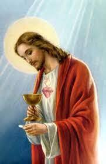
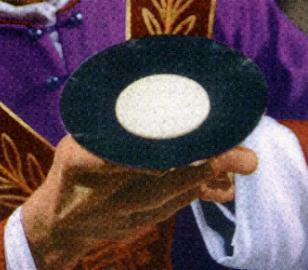
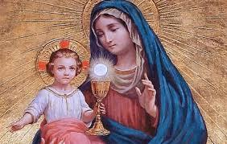
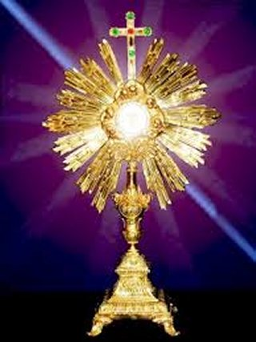
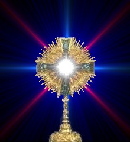

"JESUS PéO DA VIDA"
REALIDADE DOS FATOS

Os Apóstolos passaram a compreender integralmente as palavras DELE, principalmente quando ELE afirmava que era o Péo descido do Céu, e ento, eles compreenderam que a SAGRADA EUCARISTIA era a SUA Lembrana Viva e Eterna no mundo, era ELE Mesmo que ia permanecer conosco atravós do Sagrado Sacramento, para nos ajudar e auxiliar nas dificuldades da caminhada existencial. Assim, a EUCARISTIA foi maneira sensóvel escolhida por NOSSO SENHOR, para permanecer junto de todos aqueles que O amam e que necessitam de SEU Divino e precioso AuxÉlio.Na eternidade junto do PAI
ETERNO e do ESPÍRITO SANTO, JESUS continuou a SUA benfica Obra em benefécio de
todos nós, os seus filhos. A SANTSSIMA VIRGEM MARIA permaneceu com Seu exemplo
e as lembranas no coração. Junto dos Discípulos relembrava passagens e fatos
ocorridos com JESUS, mencionando o impressionante carinho e a admirvel
pacincia DELE em todas as ocasies; diante das 
MARIA, NOSSA SENHORA DO SANTSSIMO SACRAMENTO
Estes fatos nos levam a
raciocinar: JESUS pregou o Amor, a Justia, o Direito e a Fraternidade, derramou
o Seu precioso e Sagrado Sangue para Redimir todas as 
Por outro lado, MARIA, NOSSA SENHORA, a MÃE DE JESUS, se mantm sempre junto DELE na eternidade. ELA a Mãe Querida e Amorosa, que também sempre ajuda a humanidade que busca a SUA adorvel e perfeita intercessão junto a DEUS, com objetivo de vencer as dificuldades e resolver os problemas da existncia. Ora, sendo JESUS o prprio SACRAMENTO SANTSSIMO e sendo NOSSA SENHORA a querida e amada MÃE DE JESUS perfeitamente justo e correto, afirmar que NOSSA SENHORA a MÃE DO SANTSSIMO SACRAMENTO, ou seja, transformando o fato em verdade incontestável da SANTA MÃE, digno dizer: NOSSA SENHORA DO SANTSSIMO SACRAMENTO. mais um precioso ttulo dado a SANTSSIMA VIRGEM MARIA, aumentando a quantidade expressiva e maravilhosa dos ttulos que possui.

PADRE JULIO MARIA E PADRE
PEDRO EYMARD
Também a esta conclusão chegaram o Reverendássimo Padre Jálio Maria De Lombaerde, fundador da Ordem Religiosa, Congregao dos Missionrios de Nossa Senhora do Santíssimo Sacramento, popularmente conhecida como Missionrios Sacramentinos de Nossa Senhora, no ano de 1929, em Manhumirim, MG, e o Reverendássimo Padre Pedro Julio Eymard, que colocou na Constituio da sua Ordem Religiosa, Congregao do Santíssimo Sacramento, fundada em 1856, na Frana, textos que constituem os Pargrafos 37 e 38 da Constituio, exaltando a MÃE DE DEUS, MARIA SANTSSIMA:
Inspirar-se-o na vida de MARIA no Cenculo, onde JESUS institura a Eucaristia, inteiramente recolhida na presena de JESUS no SANTSSIMO SACRAMENTO, devotadássima aos cuidados do Seu Culto, toda abrasada no desejo de Sua glória e de Seu amor na terra. (Constituies n 37)
A fim de ser mais agradável ao NOSSO SENHOR em Seu servio quotidiano, unir-se-o SANTSSIMA VIRGEM, como filhos Sua MÃE; ornados com seus mritos e virtudes, faro com MARIA suas adorações, e, sobretudo, a preparao para a Santa Comunho e a Ao de Graças. (Constituies n 38)
A PALAVRA DO PAPA PAULO VI

Referindo-se ao titulo dado a MARIA, disse o Papa Paulo VI:NOME NOVO, NOSSA SENHORA DO SANTSSIMO SACRAMENTO, mas de uma realidade muito antiga, aquela da qual se serviu São Pedro Julio Eymard, o infatigvel Apóstolo da Divina Eucaristia, quando ele falava aos seus filhos de NOSSA SENHORA DO SANTSSIMO SACRAMENTO. Para encontrar esta férmula admirvel, que testemunha a perspiccia de seu espírito, ele deve ter vivido em estreita amizade com DEUS e ter perscrutado a fundo todas as razes, manifestas e ocultas, que ligam a VIRGEM MARIA ao Sacramento do Amor; e foi assim que ele acrescentou, como uma pérola preciosa, um novo ttulo de glória coroa mariana. Pode-se acreditar que o Padre Eymard ter raciocinado assim: a Eucaristia não chamada pela Igreja de o verdadeiro Corpo nascido da VIRGEM MARIA? Durante a sua vida terrestre, a VIRGEM não foi o vivo Tabernculo do CRISTO JESUS, que Ela gerou, adorou e que Ela deu e manifestou a humanidade? Por conseguinte, não deve esta VIRGEM ser considerada e invocada como o Modelo do Culto Perfeito, por todos os adoradores e, sobretudo, pelos Sacerdotes que são verdadeiramente estabelecidos Ministros de um to grande Sacramento"
O PAPA JOÃO PAULO II
Aconselha em sua Encclica: Ecclesia de Eucharistia. Devemos nos colocar, todos: NA ESCOLA DE MARIA, MULHER EUCARSTICA. Com São Pedro Julio Eymard, invoquemos com filial devoção: NOSSA SENHORA DO SANTSSIMO SACRAMENTO, MÃE E MODELO DOS ADORADORES, ROGAI POR NºS, AMM".
ORAES
VIRGEM IMACULADA, MÃE DO SALVADOR, cuja carne e sangue tomados em vosso castssimo seio nos alimentam na DIVINA EUCARISTIA, nós vos saudamos sob o ttulo de NOSSA SENHORA DO SANTSSIMO SACRAMENTO, porque fostes a primeira a praticar os deveres da vida eucarstica, ensinando-nos, com o vosso exemplo, a assistir ao Santo Sacrifécio da Missa, a Comungar com fervor espiritual e a visitar frequentemente e com devoção o augustssimo Sacramento do Altar.
MARIA, fazei que, seguindo os vossos passos, possamos cumprir sempre mais perfeitamente os nossos sagrados deveres e mereamos assim a eterna recompensa. Assim seja.
OUTRA ORAÇÃO
VIRGEM MARIA,
NOSSA SENHORA DO SANTSSIMO SACRAMENTO, belo Sacrério de DEUS entre os homensó,
MÃE DE CRISTO E NOSSA MÃE, rogai 
MÃE Querida nos dá um ardente amor pela Eucaristia, Belo Sol da Igreja.
Renovai, sem cessar, em nosso coração o espírito de ao de graças, de adoração e de louvor.
Vós, que sois o Modelo de Fidelidade no Amor, nos ajudas a tornarmos pelo ESPÍRITO SANTO, uma oferenda viva para a glória do PAI e para a salvação do mundo.
Fazei de nós testemunhas alegres e apaixonadas por JESUS CRISTO.
Atra, para ELE, numerosos adoradores para am-LO e fazer que O amem em sua Eucaristia, fruto da rvore da Cruz.
Conosco, rogai ao MESTRE da seara, enviar-nos operrios para que Seu Reino venha, e todos os homens possam comungar, um dia, o Péo que dá a vida eterna.
Amém.